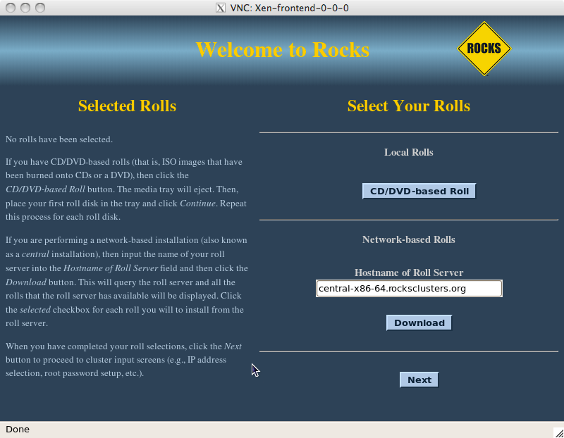
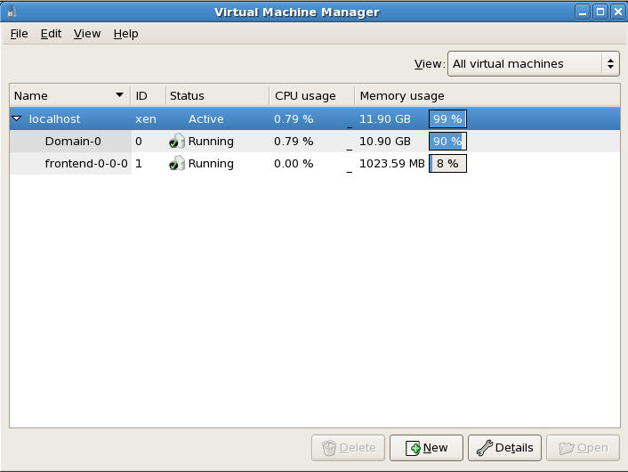
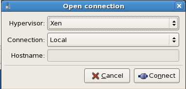

Xen Users Guide: 
| ||
|---|---|---|
| Prev | Chapter 3. Using the Xen Roll | Next |
After you install a VM Server and at least one VM Container, you are ready to provision a virtual cluster.
We'll use the following illustration as a guide to help keep track of the names of the physical machines and the virtual machines.
In the above picture, "espresso.rocksclusters.org" is a physical machine. Also, "vm-container-0-0" and "vm-container-0-1" are physical machines that were kickstarted by "espresso". The machine "frontend-0-0-0" is a virtual machine that is hosted by "espresso". The machines "hosted-vm-0-0-0" and "hosted-vm-0-1-0" are VMs that are associated with "frontend-0-0-0" (they are all in the same VLAN).
Depending on your perspective, the virtual machines have different names. Dom0 is a physical machine that hosts (multiple) virtual systems. DomU are guests and generally refer to names by usual convention. The equivalence is:
Table 3-1.
| Host | Dom0 Name (physical) | DomU Name (virtual) |
|---|---|---|
| 37:77:6e:c0:00:00 | frontend-0-0-0 | vi-1.rocksclusters.org |
| 37:77:6e:c0:00:01 | hosted-vm-0-0-0 | compute-0-0 |
| 37:77:6e:c0:00:02 | hosted-vm-0-1-0 | compute-0-1 |
 | An important point is that the only common thing between the physical side and the virtual side is the MAC address (in yellow). We will use the MAC address of a virtual machine to control it (e.g., to initially power it on). |
The names in the virtual cluster look like the names in a traditional cluster -- the frontend is named "vi-1.rocksclusters.org" and its compute nodes are named "compute-0-0" and "compute-0-1". If you login to "vi-1.rocksclusters.org", you would be hard pressed to tell the difference between this virtual cluster and a traditional physical cluster.
 | You must select your own IP address for your virtual frontend. The IP address "137.110.119.118" is managed by UCSD and should not be used by you. They are only used here to show you a concrete example. |
First, we'll add a virtual cluster to the VM Server's database. In this example, we'll add a frontend with the IP of "137.110.119.118" and we'll associate 2 compute nodes with it:
# rocks add cluster ip="137.110.119.118" num-computes=2 |
The above command will take some time and then output something similar to:
created frontend VM named: frontend-0-0-0 created compute VM named: hosted-vm-0-0-0 created compute VM named: hosted-vm-0-1-0 |
The command adds entries to the database for the above nodes and establishes a VLAN that will be used for the private network (eth0 inside the VM).
Info about all the defined clusters on the VM Server (including the physical cluster) can be obtained with the command: rocks list cluster:
# rocks list cluster FRONTEND CLIENT NODES TYPE espresso.rocksclusters.org: ---------------- physical : vm-container-0-0 physical : vm-container-0-1 physical frontend-0-0-0-public: ---------------- VM : hosted-vm-0-0-0 VM : hosted-vm-0-1-0 VM |
In Rocks, we've developed a service known as the "Airboss" that resides on the physical frontend (in Dom0) and it allows non-root users to control their VMs. The motivation for this service is that libvirt (a virtualization API written by RedHat that can control several different virtualization implementations) assumes "root" access to control and monitor VMs.
The Airboss in Rocks is a small service that uses digitally signed messages to give non-root users access to their virtual cluster (and only their virtual cluster). The Airboss relies upon public/private key pairs to validate messages. The administrator of the physical hosting cluster must issue a single command to associate a public key with a particular virtual cluster. At that point, the full process of booting and installing a virtual cluster can be controlled by the (authorized) non-root user.
In the above picture, a user that is logged in to vi-1.rocksclusters.org wants to power on compute-0-0 (one of the VMs associated with the virtual cluster). The user executes the "power on" command. The command creates a "power on" message, signs it with a private key, then sends it to the Airboss that is running on espresso.rocksclusters.org. The Airboss verifies the message signature. If the signature is valid, then the Airboss instructs libvirt on vm-container-0-0 to start ("power on") compute-0-0.
Before we can install a VM, we must create an RSA key pair. These keys will be used to authenticate Airboss commands. To create a key pair, execute:
# rocks create keys key=private.key |
The above command will ask for a pass phrase for the private key. If you would like a "passphraseless" private key, execute:
# rocks create keys key=private.key passphrase=no |
The above command will place your private key into the file private.key and it will output the public key for your private key:
# rocks create keys key=private.key Generating RSA private key, 1024 bit long modulus ............++++++ .......++++++ e is 65537 (0x10001) Enter pass phrase for private.key: Verifying - Enter pass phrase for private.key: Enter pass phrase for private.key: writing RSA key -----BEGIN PUBLIC KEY----- MIGfMA0GCSqGSIb3DQEBAQUAA4GNADCBiQKBgQDMoCPmR/Kev64znRBxvtsniXIF dyQMxR/bBFKNDmvmzPuPUim5jmD3TLilnH75/KidtJCwlb+Lhr5Cs6/9sRzX6rX2 ExVUZsgo4A+O+XMk8KeowO/c2rPc+YdXaBir3Aesm/MCfCZaidZae8QLmVKW7Va5 qErl9gyhhR7uDX+hgwIDAQAB -----END PUBLIC KEY----- |
Now save the public key to file, that is, copy the above public key:
-----BEGIN PUBLIC KEY----- MIGfMA0GCSqGSIb3DQEBAQUAA4GNADCBiQKBgQDMoCPmR/Kev64znRBxvtsniXIF dyQMxR/bBFKNDmvmzPuPUim5jmD3TLilnH75/KidtJCwlb+Lhr5Cs6/9sRzX6rX2 ExVUZsgo4A+O+XMk8KeowO/c2rPc+YdXaBir3Aesm/MCfCZaidZae8QLmVKW7Va5 qErl9gyhhR7uDX+hgwIDAQAB -----END PUBLIC KEY----- |
And save your public key into a file (e.g., $HOME/public.key).
We now want to associate your public key with the virtual cluster you provisioned. This will allow you to use your private key to send authenticated commands to control your cluster. To associate your public key with your virtual cluster, execute:
# rocks add host key frontend-0-0-0 key=public.key |
We can see the relationship by executing:
# rocks list host key HOST ID PUBLIC KEY frontend-0-0-0: 7 -----BEGIN PUBLIC KEY----- : MIGfMA0GCSqGSIb3DQEBAQUAA4GNADCBiQKBgQDMoCPmR/Kev64znRBxvtsniXIF : dyQMxR/bBFKNDmvmzPuPUim5jmD3TLilnH75/KidtJCwlb+Lhr5Cs6/9sRzX6rX2 : ExVUZsgo4A+O+XMk8KeowO/c2rPc+YdXaBir3Aesm/MCfCZaidZae8QLmVKW7Va5 : qErl9gyhhR7uDX+hgwIDAQAB : -----END PUBLIC KEY----- : ---------------------------------------------------------------- |
We see that the public key is associated with "frontend-0-0-0" (the name of the VM in Dom0).
Now, we'll want to install the virtual frontend. First, login to the physical frontend (e.g., espresso). To start the VM frontend install, we'll need to power on and install the VM frontend:
# rocks set host power frontend-0-0-0 action=install key=private.key |
| The action of "install" ensures that the VM will be put into install mode, then it will be powered on. |
Then, to connect to the VM's console, execute:
# rocks open host console frontend-0-0-0 key=private.key |
Soon you will see the familiar frontend installation screen:

In the "Hostname of Roll Server" field, insert the FQDN of your VM Server (the name of the physical machine that is hosting the VM frontend). Then click "Download".
From here, you want to follow the standard procedure for bringing up a frontend starting at Step 8.
After the VM frontend installs, it will reboot. After it reboots, login and then we'll begin installing VM compute nodes.
Login to the VM frontend (the virtual machine named "vi-1.rocksclusters.org" in the example picture at the top of this page), and execute:
# insert-ethers |
Select "Compute" as the appliance type.
In another terminal session on vi-1.rocksclusters.org, we'll need to set up the environment to send commands to the Airboss on the physical frontend. We'll do this by putting the RSA private key that we created in section Creating an RSA Key Pair (e.g., private.key) on vi-1.rocksclusters.org.
Prior to sending commands to the Airboss, we need to establish a ssh tunnel between the virtual frontend (e.g., vi-1) and the physical frontend (e.g., espresso, where the Airboss runs). This tunnel is used to securely pass Airboss messages. On the virtual frontend (e.g., vi-1), execute:
# ssh -L 8677:localhost:8677 espresso.rocksclusters.org |
Now we can securely send messages to the Airboss.
Now, we're ready to install compute nodes. But, there's a problem - when we first login to vi-1.rocksclusters.org, the only machine we know about is ourself (i.e., vi-1.rocksclusters.org). There are no other nodes in the virtual frontend's database. But the physical machine knows about the MAC addresses of the virtual compute nodes (e.g., hosted-vm-0-0-0 and hosted-vm-0-1-0) that are associated with this virtual cluster. The good news is, we can ask the Airboss on the physical frontend for a list of MAC addresses that are assigned to our virtual cluster:
# rocks list host macs vi-1.rocksclusters.org key=private.key |
Which outputs:
MACS IN CLUSTER 36:77:6e:c0:00:02 36:77:6e:c0:00:00 36:77:6e:c0:00:03 |
The MAC address 36:77:6e:c0:00:00 is ourself (the VM frontend) and the other two MACs (36:77:6e:c0:00:02 and 36:77:6e:c0:00:03) are the VM compute nodes that are associated with our VM frontend.
We can use the MAC address of the VM compute nodes to power up and install our compute nodes:
# rocks set host power 36:77:6e:c0:00:02 key=private.key action=install |
| The action of "install" ensures that the VM will be put into install mode, then it will be powered on. |
Soon, you should see insert-ethers discover the VM compute node:
After the virtual compute node is discovered by insert-ethers, we can open a console to the node by executing:
# rocks open host console compute-0-0 key=private.key |
Lastly, to power off a virtual compute node (e.g., compute-0-0), execute:
# rocks set host power compute-0-0 key=private.key action=off |
Virt-manager is a program produced by RedHat that is a desktop user interface for managing virtual machines. This section describes how to use some of virt-manager's features to control and monitor VMs on a Rocks cluster.
To interact with the VM frontend's console, on the physical frontend, you need to start "virt-manager":
# virt-manager |
This will display a screen similar to:

Double click on the "localhost" entry and then you'll see:

To bring the up the console for the VM frontend, double click on "frontend-0-0-0".
Now we'll describe how to connect to the console for the virtual compute node "compute-0-0". In the example configuration described at the top of this page, the VM "compute-0-0" is hosted on the physical machine named "vm-container-0-0" so we'll need to tell "virt-manager" to open a connection to "vm-container-0-0".
Inside "virt-manager", click on "File" then "Open connection...". This brings up a window that looks like:

Now change the "Connection:" field to "Remote tunnel over SSH" and enter "vm-container-0-0" for the "Hostname:" field:

Then click "Connect".
In the "virt-manager" window, you should see something similar to:

Double click on "vm-container-0-0" and then you'll see:
Now to connect to the compute node's console, double click on "hosted-vm-0-0-0". Recall that from the perspective of the physical frontend (the VM Server), "hosted-vm-0-0-0" is the name for the VM "compute-0-0" (again, see the figure at the top of this page).
You should now see the console for compute-0-0: